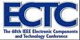

Industry Events - 2018
March 2018
Semiconductor Industry Speaker Series
March 14, 2018 – Milpitas, CA – oin us on March 14 for Packaging Innovation for our Application Driven World, to be presented by Rich Rice, Senior VP, Business Development, ASE US, Inc.
The semiconductor market performed very well in 2017, underscoring broader electronic market dynamics and overall improved economic buoyancy. As we venture further into 2018, positive economic indicators point to continued growth. So, what is there to worry about?
On the other side of the coin, our two largest drivers for semiconductor revenues have essentially flattened out over recent times, so it is imperative that we collectively identify and nurture new applications that can stimulate and maintain further growth. During his talk, Rich Rice will discuss where some of these new opportunities might lie, while describing the importance of IC packaging innovation to enable and support many such new applications. Rice will also give consideration to how key elements of supply chain collaboration are essential in driving new solutions.
MEPTEC/IMAPS Semiconductor Speaker Series
REGISTER

Keynote speaker announced for ECTC 2018
March 24, 2018 - San Diego, CA - The 2018 IEEE 68th Electronic Components and Technology Conference (ECTC) takes place at the Sheraton San Diego Hotel & Marina, May 29 – June 1, 2018. Attendance at the past three editions of ECTC has consistently topped 1400. Sam Karikalan, the General Chair of the 68th ECTC, noted that with IC packaging increasingly playing the role of performance enabler in integrated circuits, the conference has also rightly gained the attention of major OEMs that are focused on scaling up their system performance. “The 68th ECTC is looking forward to playing the host again for all the world’s leading IDMs, wafer foundries, OSAT service providers, substrate and material vendors, equipment manufacturers, research institutions and universities that will be showcasing their cutting edge R&D in the field of microelectronics packaging over four full days,” said Karikalan.
Keynote speaker
The 68th ECTC in San Diego will feature Boon Chye (BC) Ooi, Sr. Vice President of Global Operations at Broadcom Ltd., as its luncheon keynote speaker on May 30th. BC Ooi is a well-known supply chain guru, with four decades of experience in semiconductor manufacturing, including a long career at Intel followed by a stint at Xilinx as its SVP of Worldwide Operations. He is currently responsible for managing worldwide manufacturing, outsourcing, procurement and logistics, planning and quality programs at Broadcom. “ECTC is honored to have BC Ooi as our luncheon keynote speaker this year,” said Karikalan. “With his vast experience in running semiconductor manufacturing operations in places such as the Americas, Europe, the Caribbean and Asia, there is no better person than BC to address the global IC packaging industry at this important juncture.”
Compelling technical program
Over 350 technical papers, on topics such as fan-out packaging and 3D/2.5D/flip-chip/wafer- level packaging, have been lined up for presentation at the 68th ECTC, in 36 oral and five interactive presentation sessions. Also, 18 professional development courses are being offered on various packaging topics. The Program Chair of the 68th ECTC, Chris Bower, noted, “As usual, this year’s ECTC is packed with special sessions, with invited presentations by industry experts on topics, such as soft materials, advanced assembly, IC/package co-design and high-density packaging. The Wednesday evening plenary session on the topic “Artificial Intelligence: Impact on System Design,” should be one of the highlights this year.”
A number of social events will also provide ample networking opportunity for everyone at ECTC. Besides the student reception and women’s panel that have become regular components of ECTC, there will also be a new young professionals event this year. Both Karikalan and Bower observed that interest in this year’s ECTC from sponsors and exhibitors has been outstanding and on behalf of the ECTC executive committee, they offered sincere thanks to all of them for such support.
ECTC is sponsored by the IEEE Electronics Packaging Society. Online advance registrations are now open at www.ectc.net.